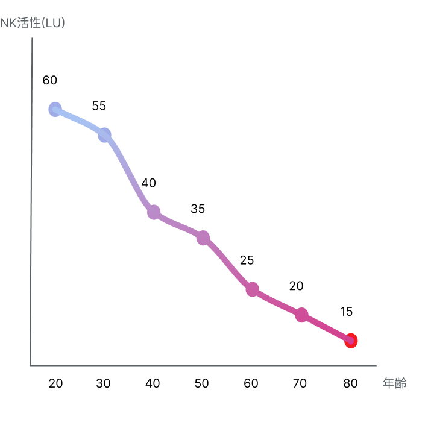
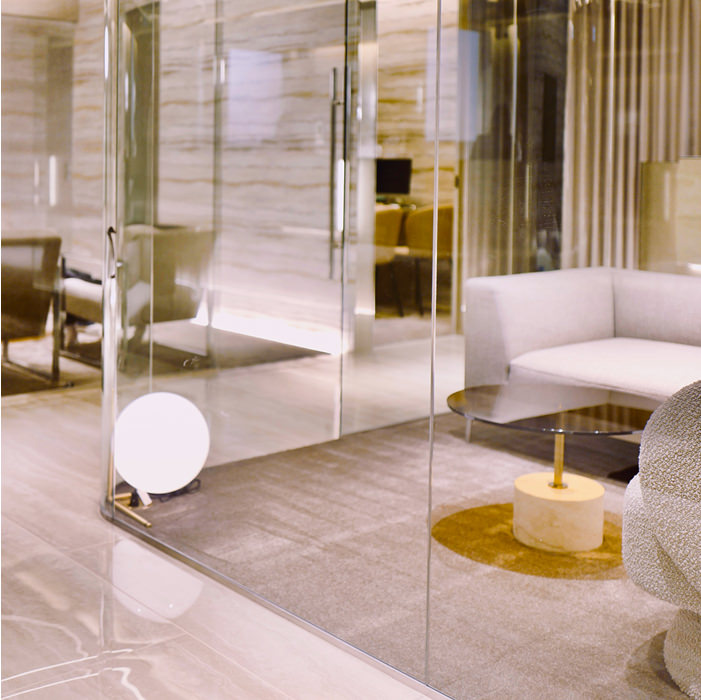
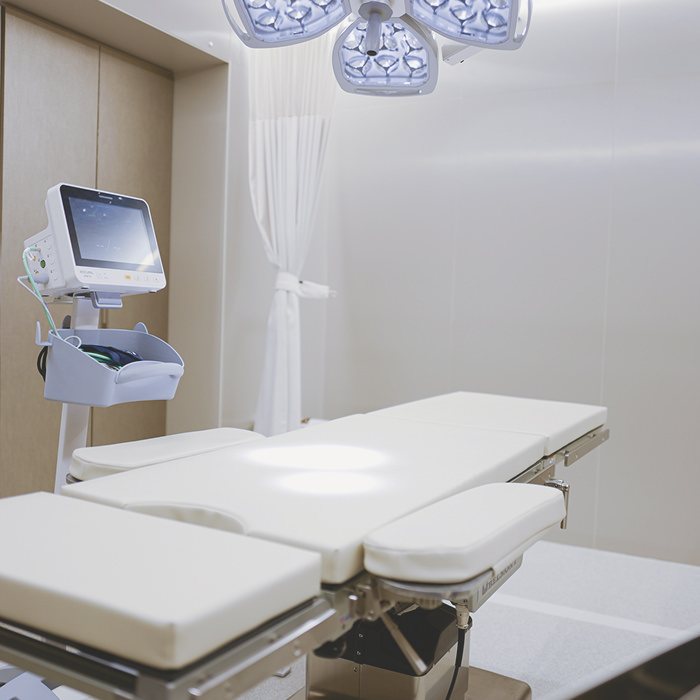
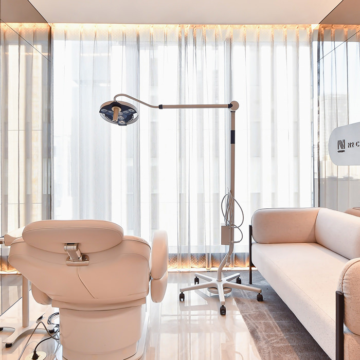

免疫細胞療法
REBUILDING YOUR IMMUNITY
免疫細胞はあなたの体を常に守る防衛軍です。
免疫細胞は、毎日あなたの体内をパトロールし、「異常な細胞」を見つけると瞬時に攻撃・排除します。
がん細胞やウイルス感染細胞を逃がさないのは、このとてもタフで真面目な“防衛軍”が働いているからこそです。
しかし、ストレスの多い日常や加齢によって、この防衛軍は徐々に力を失っていきます。
免疫力の低下は、深刻な病気のリスクを高める重大な要因です。
健康を守るためには、“本来の免疫力”を取り戻すことが最大の鍵となります。
健康を守るためには、“本来の免疫力”を取り戻すことが最大の鍵となります。
NK細胞とは
免疫細胞は体内に侵入した細菌やウイルスを排除し、健康を守る役割を担います。
その中でも、NK細胞（Natural Killer細胞）は「がん細胞」や「ウイルス感染細胞」を直接攻撃して排除する重要な免疫担当部隊です。
その中でも、NK細胞（Natural Killer細胞）は「がん細胞」や「ウイルス感染細胞」を直接攻撃して排除する重要な免疫担当部隊です。
NK細胞は“自然免疫”の一部であり、特別な準備なくともすぐに働き始める迅速さが特徴です。
N2クリニックでは、患者様ご自身の血液からNK細胞を採取し、体外で増殖・活性化させたうえで再び体内に戻す“NK細胞療法”を実施しています。
N2クリニックでは、患者様ご自身の血液からNK細胞を採取し、体外で増殖・活性化させたうえで再び体内に戻す“NK細胞療法”を実施しています。
もともと備わっている免疫力を強化することで、体への負担を抑えながら、病気に立ち向かう力を高めることが可能です。
単独治療だけでなく、がん治療や感染症予防など他の治療と組み合わせることで、さらなる相乗効果が期待できます。
単独治療だけでなく、がん治療や感染症予防など他の治療と組み合わせることで、さらなる相乗効果が期待できます。
NK活性の数値
NK細胞 は体の中の異常を見つけ、それを攻撃しますが、加齢やストレスによって活性が低下する傾向にあります。
その結果として免疫力が低下し、さまざまな疾患を発症する原因につながっていきます。
その結果として免疫力が低下し、さまざまな疾患を発症する原因につながっていきます。
NK細胞の活性（働く力）を表す単位は、健康診断などで一般的に使用される「NK活性」の単位（LU: Lytic Units）を基準にします。
右のグラフは、年齢ごとの目安となるNK活性の参考値です。
あなたのNK活性はどれくらいでしょうか？
（健康な人でも免疫年齢は実年齢を上回ることがあります。）
（健康な人でも免疫年齢は実年齢を上回ることがあります。）
当院では、ご自分の免疫の状態が一目でわかる「免疫検査」を行っております。
ご自分の免疫の状態を確認しながら、免疫細胞療法により理想の状態に近づけていくことができます。
ご自分の免疫の状態を確認しながら、免疫細胞療法により理想の状態に近づけていくことができます。
また、当院ではNK細胞のほか、樹状細胞、アルファ・ベータT細胞、ガンマ・デルタT細胞などのさまざまな免疫細胞による免疫細胞療法の再生医療提供計画を取得しています。
状態に応じて、最適な治療法を専門の医師がご提案いたします。

NK細胞療法の活用方法
NK細胞療法は広い範囲に渡った活用が可能です。
患者様一人ひとりのご状況に合わせた活用方法をご提案いたします。
患者様一人ひとりのご状況に合わせた活用方法をご提案いたします。
健康増進・予防
自己治療力の増強による健康増進、がんやウイルス感染の予防
手術や陽子線治療との併用
がんの再発予防や転移防止、がんに対する免疫力の誘導
化学療法との併用
化学療法と併用し相乗効果を発揮し、副作用を軽減します。
緩和医療との併用
がんの進行を遅らせ、生活の質や予後の改善を目指します。
治療の流れ
-

-
1. カウンセリング専門医が現在の症状やご希望を丁寧に伺い、免疫細胞療法についてご説明します。ご不明点にもすべてお答えし、納得いただいてから次へ進みます。
-
2. 採血30～50ml程度の血液を採取します。
2回目以降は、NK細胞点滴時に次回分の採血を同時に行うため、通院回数を減らすことが可能です。 -

-
３. 細胞の培養採取した血液は細胞加工施設（CPF）に送られ、
2～3週間ほどかけて高純度に活性化されたNK細胞を製造します。 -
4. 免疫細胞の投与厚生労働省の再生医療提供計画に基づくプロトコルで、再生医療専門医が安全管理を徹底したうえで点滴にて投与します。他の免疫細胞療法でも、基本的な手順は同様です。
-

-
5. アフターケア投与後は定期的に経過観察を行い、必要に応じて血液検査やNK活性検査などで安全性や効果を確認します。患者様一人一人に合わせた万全のサポート体制を整えています。
CERTIFIED
国の認可を受けた確かな医療
N2クリニックは、厚生労働省から正式に「再生医療等提供計画番号」を取得した医療機関です。
N2クリニックでは、更年期障害や慢性的な痛みに対する点滴治療、さらに顔の加齢による変化を改善する局所注入治療の提供計画番号を取得しています。
幹細胞を用いた再生医療は、厚生労働省認定の特定認定再生医療等委員会でその適合性が厳しく審査され、適切と認められた後に厚生労働省に治療計画を提出し、計画番号を取得した場合のみ治療が可能となります。
N2クリニックは正規のプロセスを経て厚生労働省に対し、再生医療提供計画を提出し、計画番号を取得しています。
また、治療の有効性を最大限に引き出すために、国内外の最新の研究内容を把握するとともに院内でも臨床研究を実施し、エビデンスの構築に努めています。
治療料金の目安
NK細胞療法
1回あたり
715,000円(税込)
6回コース（アフェレーシス）
2,200,000円(税込)
DC樹状細胞療法
一回あたり
330,000円(税込)
NK免疫細胞＋DC樹状細胞療法
一回あたり
935,000円(税込)
治療期間・回数
1回から治療可能です。
治療回数や間隔は、症状や治療目的に応じて診察時にご相談いたします。
細胞の状態などにより個人差がありますが、アフェレーシスでのNK細胞療法は一度の採血により最大で6回ほどのNK細胞投与をおこなえます。
リスク・副作用
注射部位の痛み、アレルギー反応、一時的な発熱など
※金額は症状や治療プランなどにより変動します。
※国外にお住まいの場合、国際診療手数料を別途頂戴しております。
上記以外でもたくさんの可能性があります。一人ひとりに合わせた治療ができますのでお気軽にお問い合わせください。